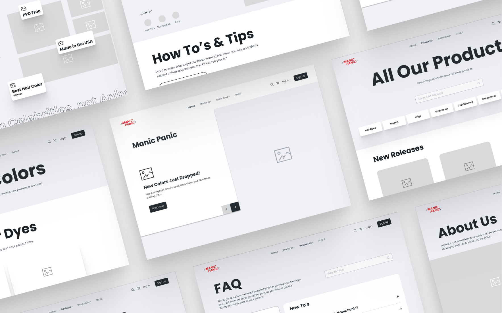

Manic Panic Redesign & Rebrand
Improving the visual design & information architecture of Manic Panic's website.
Table of contents:

Improving the visual design & information architecture of Manic Panic's website.
Manic Panic is a well-known hair dye & accessory company. Manic Panic came to us for a full website redesign and rebrand. Their goal was to make it easier for customers to find the products they're looking for and update the brand's look and feel.
I worked on this project alongside a team of taleneted designers, developers, and project managers during my time at a design agency. I was invovled in each phase of this project, including: research, wireframing, branding, and hifi design (for mobile and desktop).
We took a deep dive into Manic Panic's Google analytics and discovered their users were primarily in the 25-34 age range, 70% were female, and 80% were visiting the site on mobile.
Simplifying the complex navigation, improving product organization & visual hierarchy, along with removing confusing design elements that don't behave as intended would improve the user's experience.
Creating user personas helped us understand the goals of our users. Our users want to find the products they're looking for with ease, experience a smooth checkout flow, and a good experience on mobile.
All of the brands we analyzed had a simple navigation bar that allowed users to easily find products. They also had high quality product images that were consistent, good hover states, and product organization.
We did a thorough evaluation of Manic Panic's branding. We saw opportunity for improvement in the logo - making sure if can be used in dark and light modes, improve the lockup to create consistency and make a responsive version of the logo.
After conducting extensive research, we developed a new sitemap to improve the structure of Manic Panic's website. Our aim was to streamline the navigation and enhance the organization of their products.
When it came to choosing Manic Panic's new brand identity we created 3 stylescapes to choose from. Initially, Manic Panic choose option 2 but ultimately they wanted to stick to their edgy, punk rock roots and went with option 3.
Stylescape option 1
Stylescape option 2
Stylescape option 3
During the wireframing stage we asked ourselves "How might we make the process of finding products easier?". To remedy this, we implemented a clean, simple-to-use megamenu and categorized Manic Panic's products in a more logical and accessible way.
After our wireframes were approved, we began applying Manic Panic's new visual identity. We started with desktop, then after all desktop screens were approved we worked on the mobile hifi design.
Simplified megamenu makes finding products easier with better organization.
Simplified product organization on the homepage.
Shop by hair color.
Search for any product.
Product details page.
Find your perfect shade hair quiz.
I loved working on this project! I've been a fan of Manic Panic for such a long time and I've used their hair dye many times. I love their brand and the values they stand for, so having the opportunity to work with them was incredibly fulfilling.
UX director: Zachary Newton
UX lead: Virginia Manzi
Brand design: Carlos Bejaran, Laura Ferreira, Victor Rosario
Research: Aarin Grayson, Andrew Luistro, Sheryl Lawrence
UX design: Aarin Grayson, Bea Bottazzi, Sheryl Lawrence
UI design: Aarin Grayson, Gift Obido, Laura Ferreira